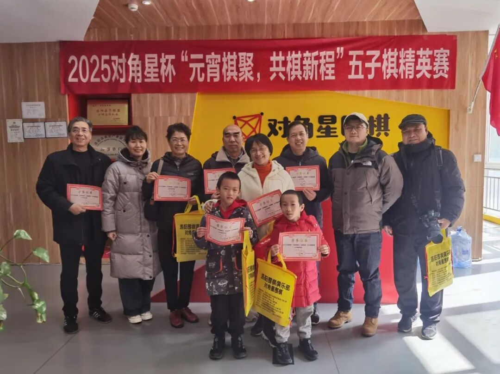
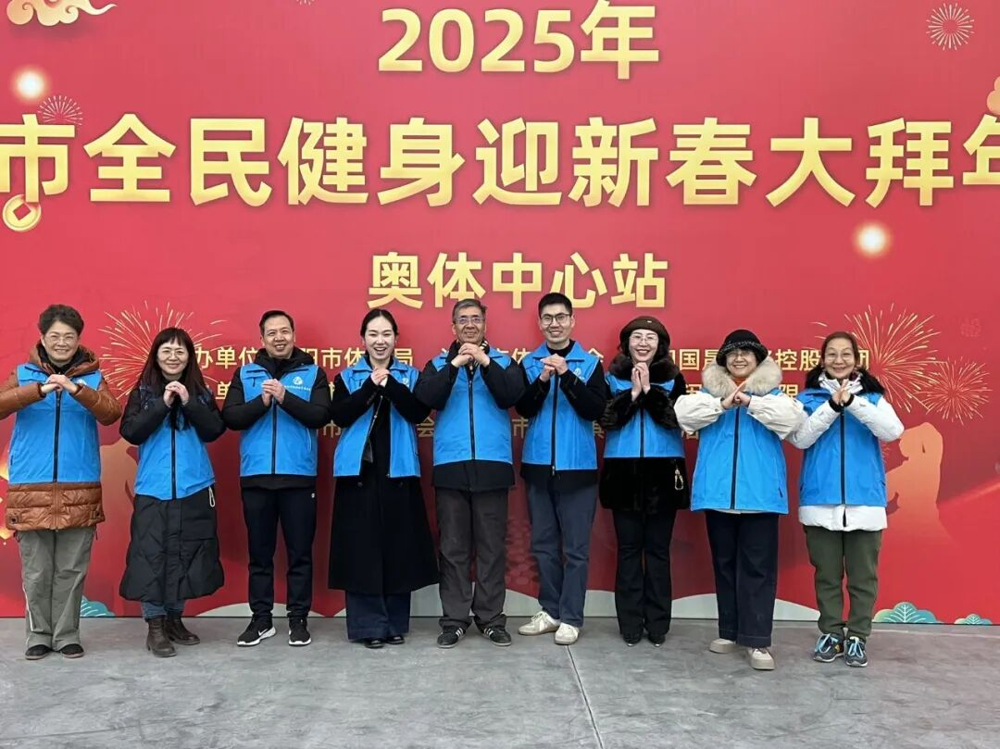
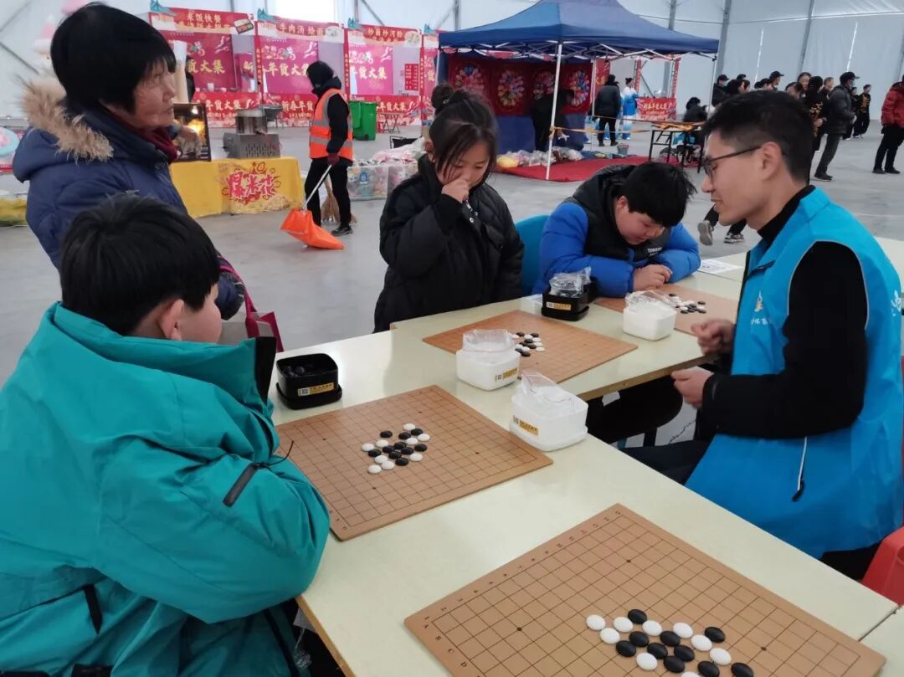
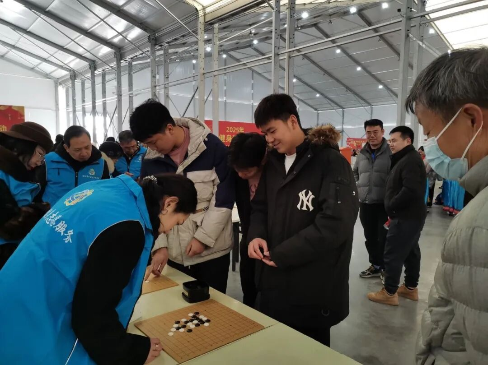
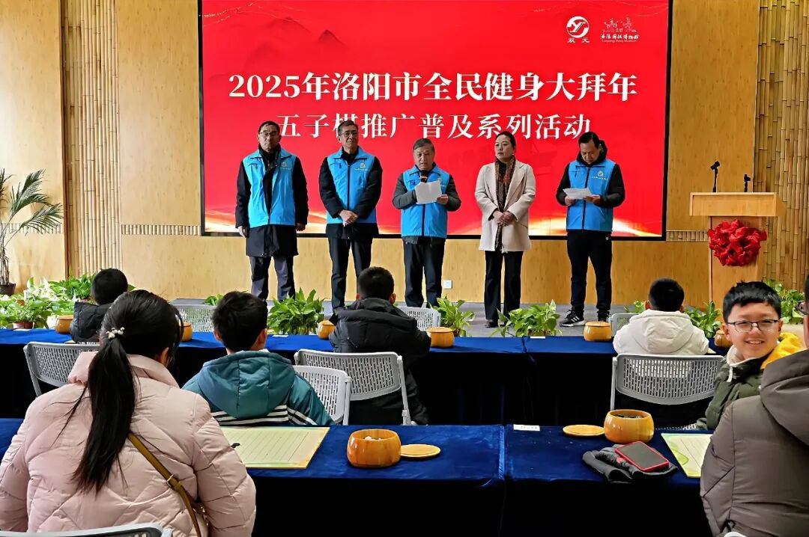
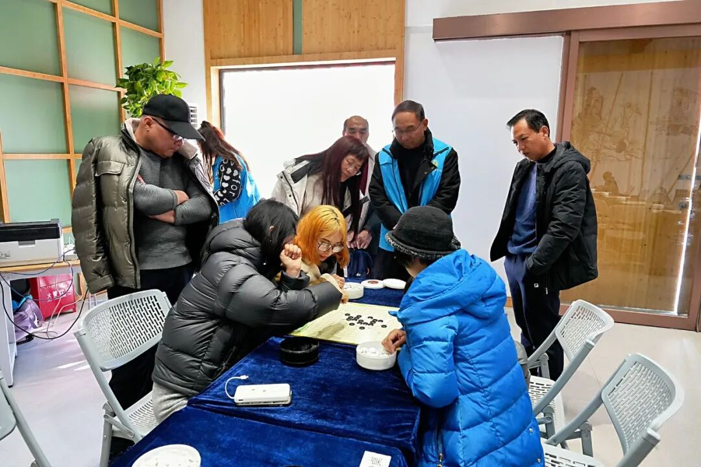
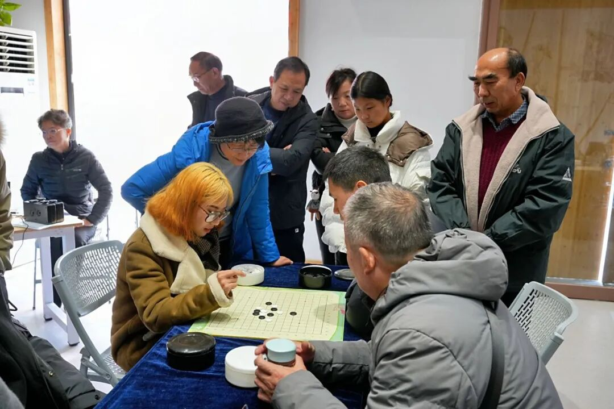
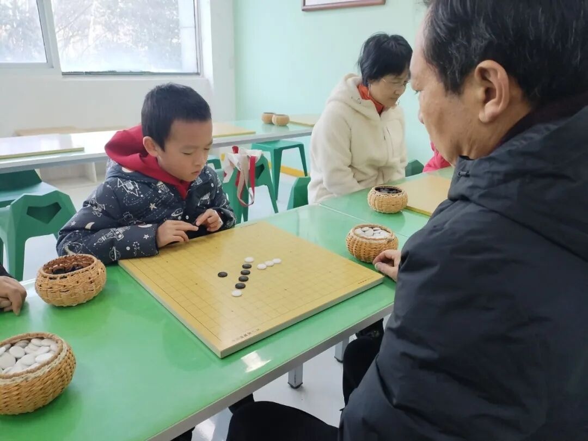
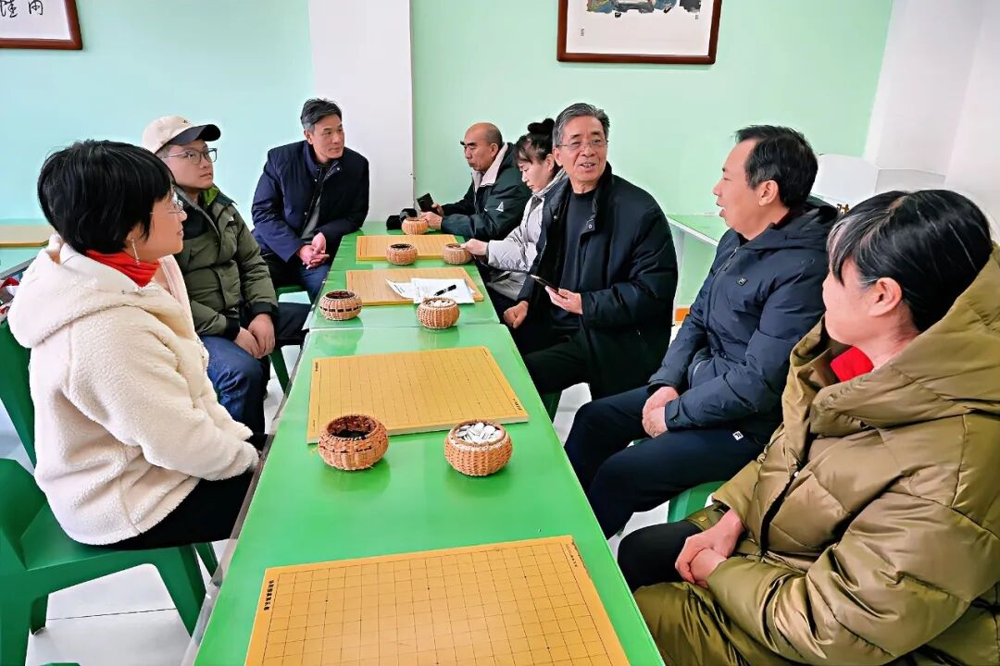

五子棋活动纷呈
大拜年完美收官
人勤春来早。随着2月9日“棋聚元宵，共棋新程”比赛的圆满落幕，将近一个月精彩粉呈的洛阳市五子棋协会春节大拜年活动完美收官。

洛阳市五子棋协会按照市体育局的整体安排，精心谋划，齐心协力，自1月15日开始开展了一系列活动共迎新年、共贺新春。1月15至17日，在奥体中心拉开了洛阳市全民健身大拜年五子棋推广普及系列活动的帷幕，开展了五子棋知识普及、一对多车轮战、交流赛等活动，受到老中青爱好者的一致欢迎，特别是现场的小朋友积极应战，非常享受向擂主学习的乐趣。



1月18至19日在双元围棋博物馆举办的五子棋亲子赛与个人公开赛更是受到家长和小朋友的欢迎。按照组委会安排，协会副秘书长张夏玲和赵云辉老师在比赛间隙设擂，选手们纷纷向擂主请教，向高手学习，两位擂主不吝指教耐心讲解行棋思路和取胜要点，大家反响热烈，交口称赞。棋王争霸更是将活动推向了高潮。



2月9日，在对角星围棋培训基地举办的对角星杯“棋聚元霄，共棋新程”五子棋公开赛在对角星尚德苑校区举办，协会副会长单位承办并提供完整服务与奖品赞助。史锐奇副会长主持了赛事活动并为获奖者颁发奖品及证书。此次活动取得圆满成功，感谢对角星围棋给予大力支持，同时也使全民健身大拜年五子棋推广普及系列活动得以完美收官。


在当天举行的总结交流会上，洛阳市五子棋协会执行会长兼秘书长何全良强调，春节大拜年活动的完美收官预示着五子棋在新的一年工作的精彩开局，推广普及还有很长的路要走，未来需要各级领导和广大棋友的共同努力，才能将五子棋推广工作以点带面，持续推进，恰似星火燎原之势，涓涓之流，可以成河。
据悉，全市五子棋教练员培训将于三月举行，公开赛、等级赛等活动也在谋划之中，相信在全市广大五子棋人的共同努力下，2025值得期待！